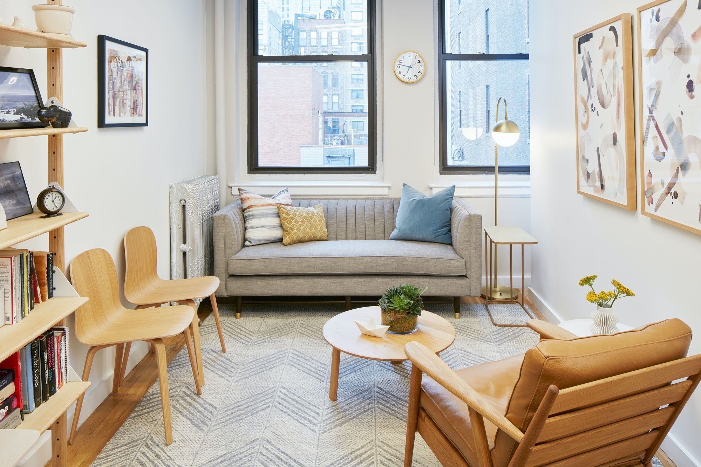
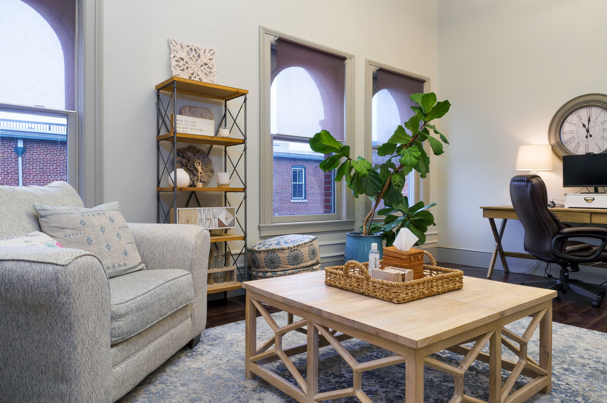

Clínica de Psicoterapia
Chegou a Sua Vez de Se Sentir Bem Consigo!
A verdadeira transformação acontece quando ELIMINA aquilo que está entre si e a vida de bem-estar que PODE ter.
Sessões online com o nosso Método Consciência, para que obtenha os resultados que anseia, em qualquer parte do mundo.

Método Consciência
O seu sofrimento e dificuldades de hoje têm sempre uma causa, uma raiz… uma ORIGEM.
Por isso, a situação em que se encontra hoje não o define. Logo, tratando as causas do problema, ele desaparece e você adquire o controlo sobre a sua vida.
Exclusivo da nossa clínica, o nosso Método Consciência foca-se em encontrar e tratar A ORIGEM dos seus sintomas e dificuldades.
Tratar A ORIGEM é a única forma eficaz de eliminar o seu sofrimento, medos, bloqueios e inseguranças. Este Método baseia-se na aplicação, de forma única, de quatro psicoterapias: Hipnose Clínica, Terapia Mente-Corpo, Eye Movement Desensitization and Reprocessing (EMDR) e Neurobiologia Interpessoal.
Hipnose Clínica
Utiliza-se o poder do seu subconsciente para que se liberte de experiências do seu passado, e para que a sua mente aprenda a alcançar o que deseja.
Terapia Mente-Corpo
Utiliza-se a ligação que existe entre o seu corpo e a sua mente, para que obtenha poder sobre as suas emoções e alcance bem-estar emocional e físico.
Eye Movement Desensitization and Reprocessing
Utiliza-se a capacidade inata do seu cérebro para se curar e se libertar das emoções, pensamentos e padrões negativos, que advêm das suas experiências de vida.
Neurobiologia Interpessoal
Utiliza-se o conhecimento da neurociência e da ciência das relações humanas, para que transforme pensamentos, emoções e relações negativas em positivas.
Todas elas têm resultados científicos comprovados de mudança positiva, e mesmo de cura.
Fazemos tudo para que, quando terminar o processo de psicoterapia com o nosso Método, se sinta confiante e capaz de viver a vida com tranquilidade, bem-estar e alegria.
O Que Dizem as Pessoas Que Confiam em Nós
Histórias reais de resultados transformadores
"Era descrente em psicoterapia. Só vim à primeira consulta porque me marcaram, por sentir que já não havia mais nada a perder, e para deixar de ser acusado de que estava assim porque queria. Felizmente estava enganado. Não era verdade que estava naquele estado porque queria, mas havia motivos. Descobri com este processo que havia também soluções para os meus problemas. Foi uma transformação sentida e vivida. Hoje estou grato por esse caminho e por mim. Obrigado por tudo."Carlos, 57 anos
"Como mães queremos o melhor para os nossos filhos. Quando pedi ajuda para a Ana, estava mesmo angustiada. Via a minha filha a sofrer com ansiedade e baixa-autoestima, e eu impotente. Nada do que fazia ajudava. Foi muito duro. Não sei o que fizeram dentro do consultório, mas foi magia. A Ana voltou a ser a pessoa alegre e feliz que era em criança. Mil vezes Obrigada."Mãe da Ana, 16 anos
"Impressionante como tudo passou a fazer sentido. Custou-me no início fazer este investimento, de tempo e dinheiro. Como a doutora me disse, o investimento não era na terapia, era em mim, e percebi que investir em mim era o mais difícil. Recordo-me bem da frase que me disse: 'Se não investe em si, como quer que a vida e os outros invistam em si?'. A partir desse momento decidi, a medo, tentar. Não sabia o que fazer, mas como me disse: 'Só tem que aparecer, o resto fazemos em conjunto.' Houve lágrimas, risos, abraços, mas mais importante, houve mudanças em mim. Agora sinto que eu sou a prioridade na minha vida."Fátima, 36 anos
"Nem acredito que estou aqui a escrever este testemunho, pois o inalcançável foi alcançado. Estou bem. Sei que aqui me disseram que era possível, mas após anos de angústia e medos não acreditava. No entanto, nunca desisti! Sei que parece pouco estar bem, mas após tanto sofrimento poder dizer que ESTOU BEM é tudo. Muito obrigada!"Sara, 42 anos
"O Henrique agora está mais seguro e confiante, e sei reconhecer que é o resultado direto do trabalho que fizeram. Eu própria sinto-me mais confiante para o orientar e apoiar. Vim buscar ajuda para ele mas, no fim, toda a família beneficiou deste processo. Obrigada pela sua ajuda."Mãe do Henrique, 12 anos
"Andava perdido. A doutora sabe que eu estava perdido. Com o trabalho que fizemos aqui, eu mudei. Compreendi o que estava a fazer mal, o que me libertei-me disso. Eu sei que me diz que o que alcancei aqui é uma conquista minha, mas a verdade é que, sem si, não teria conseguido. Ainda bem que a encontrei."André, 24 anos
Marque uma Consulta
PRESENCIAL ou ONLINE
Estamos aqui para si, à distância de um clique!
Beneficie da flexibilidade, comodidade e conforto das consultas online.
Consultas Online Multilíngues
Sessões online com o nosso Método Consciência, para que obtenha os resultados que anseia, em qualquer parte do mundo.
Consultas Presenciais - Porto
Atendimento presencial no nosso consultório no Porto, num ambiente acolhedor e profissional.
Consultas Presenciais - Barcelos
Atendimento presencial no nosso consultório em Barcelos, próximo e conveniente.
Acesso Global
Consultas online disponíveis em qualquer lugar do mundo
Flexibilidade de Horários
Seg - Sex: 10:00 - 19:00, adaptado às suas necessidades
Equipa Especializada
Psicólogos dedicados e experientes com 16+ anos de prática
Confidencialidade Total
Ambiente seguro e privado para o seu processo terapêutico
Pronto para Começar a Sua Transformação?
Aqui não precisa de ficar com receio de reconhecer o que está a vivenciar. Respondeu SIM a alguma das perguntas? Então chegou ao Sítio Certo!
Telefone: +351 935 522 267

Somos uma Equipa de Psicólogos Comprometidos com a Sua Melhoria
Aqui, no Espaço Consciência, tem ao seu dispor uma equipa de psicólogos dedicados e experientes, que genuinamente se importam consigo.
Apreciamo-lo e respeitamo-lo pelo SER único que é. Comprometemo-nos em nos dedicarmos a si com total empenho, e sempre orientados para que alcance a transformação que procura na sua vida.
Cada intervenção que realizamos é especializada, personalizada e adaptada a si, de forma a obter resultados positivos concretos.
Focamo-nos para que aqui, no Espaço Consciência, encontre o que procura: um psicólogo clínico especialista em psicoterapia e genuinamente humano, que tenha como missão alcançar consigo o melhor para si.
Genuinamente Humano
Cuidado personalizado e empático
Especializado
Método Consciência exclusivo
Comprometido
Dedicação total ao seu bem-estar
Pronto Para Começar Sua Transformação?
Entre em contato conosco hoje mesmo e dê o primeiro passo em direção a uma vida mais plena e equilibrada.
Telefone
+351 935 522 267
Disponível para chamadas e WhatsApp
contato@espacoconsciencia.pt
Resposta em até 24 horas
Localização
Porto, Portugal
Consultas presenciais e online
Horários
Segunda a Sexta: 10:00 - 19:00
Horários flexíveis disponíveis
Entre em Contato
Preencha o formulário abaixo e entraremos em contato em breve para agendar sua consulta.